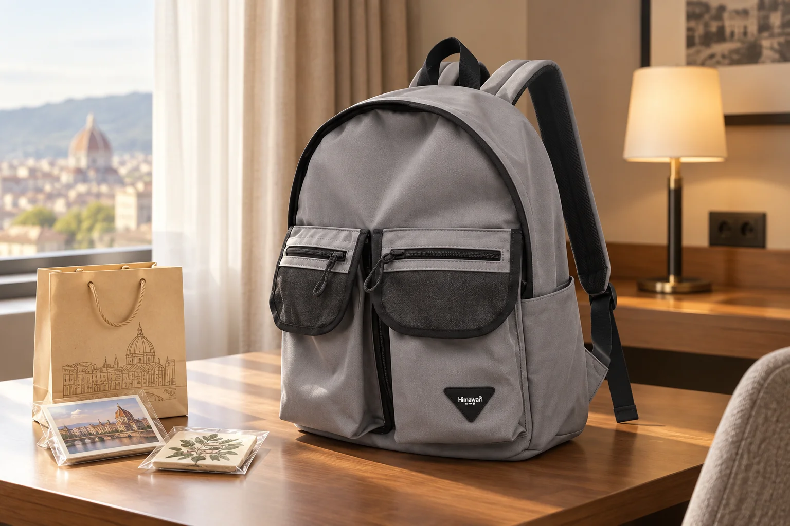

여행 기념품을 백팩에 담기 전: 작은 물건도 포장부터 살펴보세요

여행지의 엽서와 작은 공예품은 매장 봉투에 들어 있을 때는 가볍고 단정해 보입니다. 하지만 숙소로 돌아와 백팩에 넣으려면 책과 옷, 충전기 사이에서 눌리거나 흔들릴 수 있습니다. 기념품을 살 때부터 돌아가는 이동 방법과 남은 가방 공간을 함께 생각하세요. 이 글은 가방 한 개에 모든 물건을 넣는 요령보다, 물건의 형태를 지키며 가져올 수 있는지 판단하는 순서에 집중합니다.
구입 전에 포장한 상태의 크기를 물어보세요
작은 물건도 완충재나 상자가 더해지면 부피가 크게 달라집니다. 매장에서 포장된 외형을 보고 가방 입구를 통과할지, 다른 짐을 압박하지 않을지 판단하세요. 특히 유리·도자기 같은 깨지기 쉬운 물건은 판매처에 포장 방법을 문의하고, 이동 중 충격을 완전히 막을 수 있다고 단정하지 않습니다. 위탁 수하물이나 교통수단의 반입 조건이 있다면 해당 운송사의 최신 규정도 확인하세요.
평평한 종이와 입체적인 물건을 나눕니다
엽서나 작은 인쇄물은 접히지 않도록 얇은 파일 또는 단단한 받침과 함께 보관합니다. 입체적인 기념품은 모서리와 튀어나온 장식을 먼저 살피고, 납작한 종이 위에 억지로 겹치지 않습니다. 구매한 물건을 여행 중 필요한 지갑·충전기와 한 포켓에 섞으면 다음 물건을 꺼낼 때 기념품도 함께 흔들립니다. 사용할 짐과 가져올 짐의 자리를 분리하는 것이 첫 단계입니다.
숙소에서 전체 짐을 다시 펼쳐 판단합니다
여행 마지막 날 숙소에서 백팩을 열어 기존 짐의 무게와 남은 공간을 확인하세요. 기념품만 따로 넣어보고 가방의 지퍼를 힘주지 않고 닫을 수 있는지, 걸을 때 내용물이 한쪽에서 움직이지 않는지 살핍니다. 옷으로 무조건 감싸면 안전하다고 생각하지 말고 장식이 걸리거나 습기가 닿을 가능성도 확인합니다. 작은 물건 여러 개가 생겼다면 영수증과 제품별 포장을 함께 모아 분실되지 않게 정리합니다.
들어간다는 것과 안전하게 옮기는 것은 다릅니다
가방 입구에 겨우 들어가는 물건은 지퍼를 닫으면서 눌릴 수 있습니다. 이동 중 계속 손으로 들어야 하거나, 주변 짐이 받쳐주지 않아 흔들리는 물건이라면 별도 포장이나 다른 운반 방법을 고려하세요. 무거운 물건을 등에서 먼 쪽에 몰아넣으면 착용 균형도 달라집니다. 실제 짐을 넣고 짧게 메어본 뒤 불편하다면 물건을 더 채우기보다 짐을 나누는 편이 낫습니다.
사진 속 소품은 수납 가능성을 뜻하지 않습니다
대표 사진은 실제 Himawari No.1230 그레이의 외형을 참조해 숙소 책상 위에서 연출했습니다. 옆에 놓인 기념품과 쇼핑백은 제품 구성품이나 수납 시험 물건이 아닙니다. 제품을 고를 때는 기념품이 들어갈 것이라는 막연한 기대보다 평소 여행 짐의 크기와 가방 입구, 포켓 구조를 직접 대조하세요. 여행에서 돌아온 뒤에는 기념품을 꺼내고 백팩의 바닥과 안쪽에 포장재나 먼지가 남았는지 확인하면 다음 외출을 준비하기 쉽습니다.
참고·안내
- Himawari No.1230 제품 정보
- 실제 Himawari No.1230 그레이 제품 사진을 참조한 AI 연출 이미지입니다. 주변 기념품과 쇼핑백은 제품 구성품이 아니며 수납·보호 성능을 나타내지 않습니다.
자주 묻는 질문
유리 기념품을 옷으로 싸서 백팩에 넣어도 되나요?
옷만으로 충격 보호를 보장할 수 없습니다. 판매처의 포장 안내를 확인하고 깨짐 위험과 이동 방법에 맞는 별도 포장을 고려하세요.
작은 기념품은 앞주머니에 넣으면 될까요?
크기뿐 아니라 눌림, 흔들림, 지퍼를 닫을 때의 간섭을 확인하세요. 납작한 종이와 입체적인 물건은 나누는 편이 좋습니다.